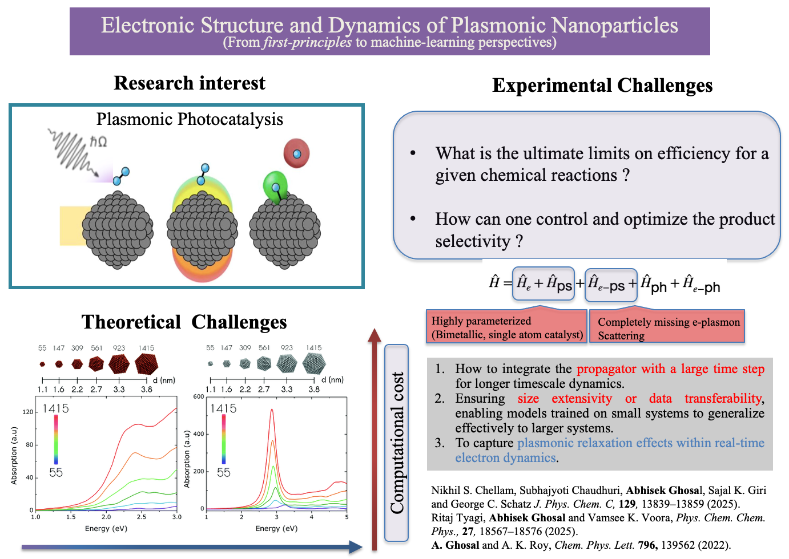
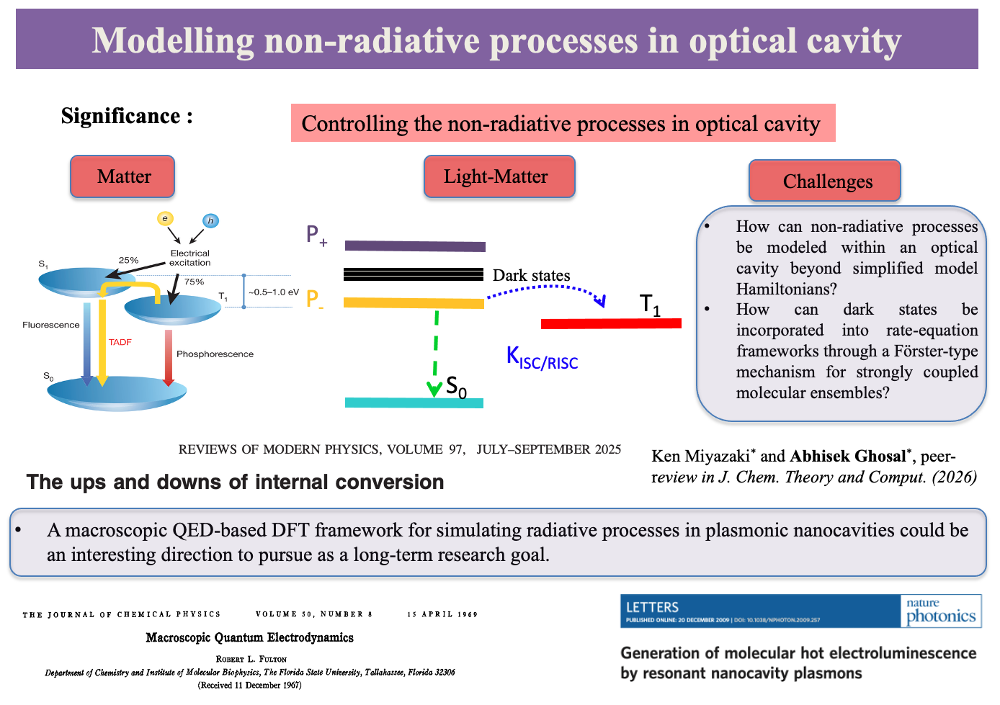
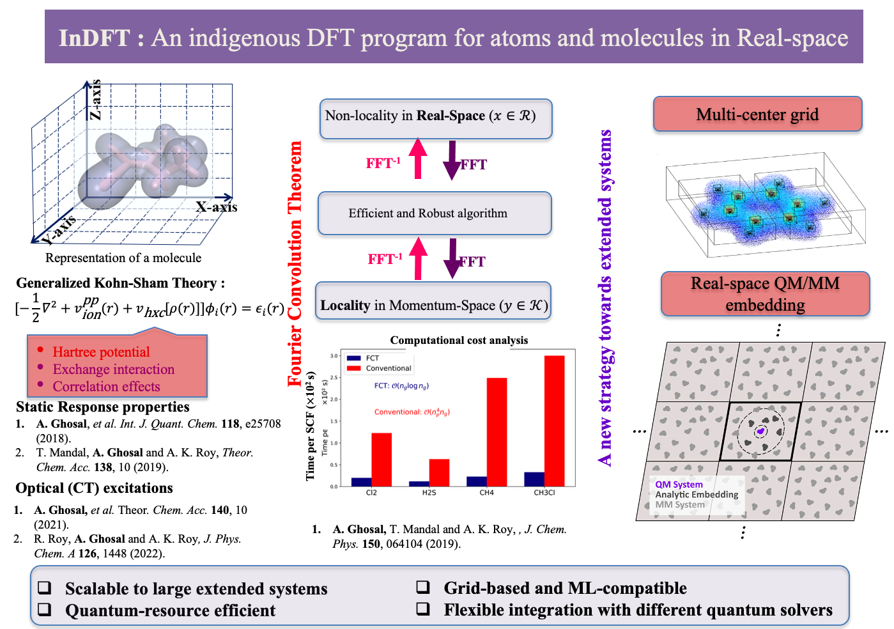
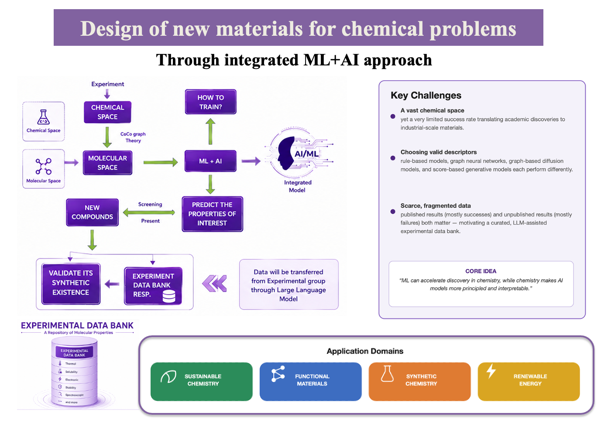

THEORETICAL & COMPUTATIONAL CHEMIST
Over the past several decades, ab-initio quantum mechanical methods have been essential for understanding the electronic structure, properties, and dynamics of many-electron systems, such as atoms, molecules, and solids. Advances in computational algorithms and hardware have expanded these techniques to fields like materials sciences, nano sciences, and even in biological sciences. But, to pursue it practically, one has to go through multiple challenges due to its complexity from different degrees of freedom and having notoriously bad scaling factor with respect to size of the system. This motivates me very strongly to explore new dimensions in electronic structure theory and dynamics along with physics-informed machine-learning (ML) based techniques.
As a theoretician, I am driven by the challenge of transforming new theoretical developments into tools for understanding and guiding real chemical processes. My research vision is to apply advanced computational approaches to uncover the microscopic mechanisms that govern plasmonic photocatalytic reactions. These include molecular dissociation, electrochemical reduction, multi-electron processes central to energy conversion, and complex organic transformations. Despite remarkable progress in plasmonic photocatalysis, key questions remain about how light-driven charge dynamics can be harnessed to control chemical reactivity. I aim to address the long-standing challenges and establish design principles that can directly inform and inspire next-generation experimental strategies.

Over the past few years, relaxation of polaritonic states within optical cavities has been shown to facilitate a new class of energy-transfer processes that remain efficient over length scales far exceeding the typical Förster radius. It is therefore compelling to map non-radiative processes in optical cavities to trace the energy flow from localized molecular states to highly delocalized polaritonic states. However, a major challenge lies in capturing the role of dark states during these energy-transfer pathways. It would be interesting to extend the second-order time-dependent perturbation theory based thermal vibration correlation function (TVCF) formalism in optical cavities. This will enable us to incorporate dark states as intermediate channels in rate formulations, including the Förster interaction which is beyond the scope of simple model Hamiltonians. The insights gained are expected to guide the design of polariton-enabled molecular and optoelectronic devices such as organic light-emitting diodes.

I led the development of InDFT, a specialized Density Functional Theory (DFT) and Time-Dependent DFT (TD-DFT) code at the Theoretical Chemistry Laboratory, IISER Kolkata. Designed for efficient electronic-structure simulations of atoms and molecules, InDFT offers a low-scaling framework for investigating charge-transfer excitations in TADF systems and nonlinear optical processes such as high-harmonic generation, multi-photon ionization, charge-resonance enhanced-ionization, etc. Building on this foundation, my future goal is to extend InDFT to extended systems using an embedding approach, leveraging its unique algorithmic features and computational efficiency—capabilities currently unavailable in existing software—to address complex excited-state and correlated phenomena in extended materials.

The vastness of chemical space, combined with the very limited success rate in translating academic discoveries to industrial-scale materials, motivates an integrated machine-learning and artificial-intelligence (ML+AI) framework for materials design. The core idea is that ML can accelerate discovery in chemistry, while chemical insight in turn makes AI models more principled and interpretable. Starting from chemical space and a suitably chosen molecular-space representation, a customizable ML+AI architecture predicts properties of interest — spanning sustainable chemistry, functional materials, synthetic chemistry, and renewable energy — to screen and propose new compounds. Predicted candidates are validated for synthetic feasibility and folded back into an experimental data bank built from both published and unpublished results, closing the loop and continuously retraining the model.

Contributions, 2021–2023. Program package for electronic structure calculations.
Contributions, 2026–present. All-electron electronic structure theory with numeric atom-centered orbitals.